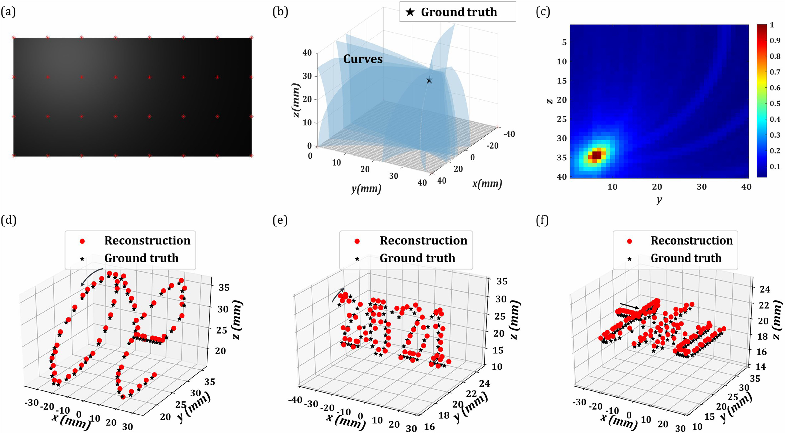

3D Location and Trajectory Reconstruction of a Moving
Object Behind Scattering Media
Rujia Deng
Xin Jin
Dongyu Du
IEEE Transactions on Computational Imaging 2022
Reconstructing an object’s location and monitoring its movement through scattering media remains a significant challenge in applications. Existing methods suffer from the object motion limit, the prior of the object information, or the complex optical setup. Here, we focus on reconstructing the 3D location and trajectory of an object in motion behind scattering media by explicitly modeling and inverting the time-varying light transportation. A time-varying scattering imaging model is derived to encode the positions of the moving object in the intensity videos captured by a conventional RGB camera. Based on the model, we find that the object lies on 3D surfaces determined by point pairs on the scattering media. We then develop a back-projection method to build a 3D confidence map for the voxelized object space to find the voxel with the maximum confidence as the object position in the reconstructed trajectory at the corresponding video time. The effectiveness of the proposed method to locate moving self-illuminated and light-reflective objects in different shapes behind scattering media with different thicknesses using 2D intensity images is verified by simulated experiments and real scattering imaging systems. The reconstructions of multiple objects and different lighting conditions are discussed.
Results

Reconstructed results for different object movements using simulated data. (a) The first frame in the “oe” trajectory with the uniform sampling points denoted by red stars. (b) The comparison of the associated surfaces and the ground truth in the voxel space. The surfaces in blue are selected from the corresponding surfaces determined by four angular sampling points in (a). The position of the ground truth is denoted by a black star. (c) is the 2D maximum projective confidence maps of the 3D confidence map along the x dimension. The axis scale represents the voxel index along the corresponding coordinate direction. The color bar corresponds to the normalized confidence values of finding an object at the corresponding voxel. (d-f) are comparisons between the reconstructed and the actual trajectory for “oe”, “2021”, “thu”. The red dot and the black star represent the reconstructed object position and the actual object centroid position, i.e., the ground truth, respectively. The arrow represents the moving direction from the starting point with the increase of time.
Reconstructed results for locating self-illuminated objects in different shapes. (a) Globe; (b) Bird; and (c) Cylinder. The left-most column: the photographs for the different objects with detailed sizes. From the second column to the last column: the comparison between the reconstructed x, y, z coordinate trajectories for different objects.
Related Works